API料金を気にしない
ブラウザ自動化で動くため、X APIの申請や高額なAPI課金を避けられます。
API不要 / 買い切り / 無料版あり
XToolsPro3は、IDとパスワードだけで始められるX(Twitter)自動投稿ツールです。 ランダム投稿、複数アカウント、プロキシ、自動DMまでまとめて管理できます。

Problems
ブラウザ自動化で動くため、X APIの申請や高額なAPI課金を避けられます。
100件プールからランダムに選び、時間もずらして機械的な投稿感を抑えます。
アカウント別プロキシで、同一IPによる連鎖凍結リスクを分散します。
Features
ランダム投稿
投稿文と画像をプール化し、重複を避けながら自然な間隔で配信します。
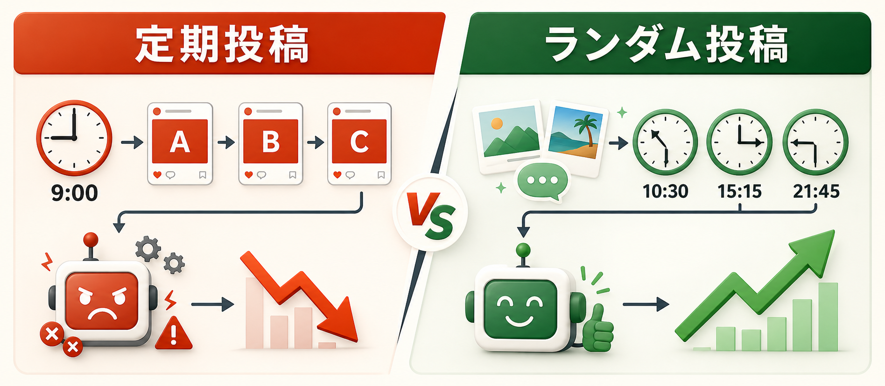
プロキシ
IPRoyalなどの情報を貼るだけ。複数アカウント運用の守りを作れます。
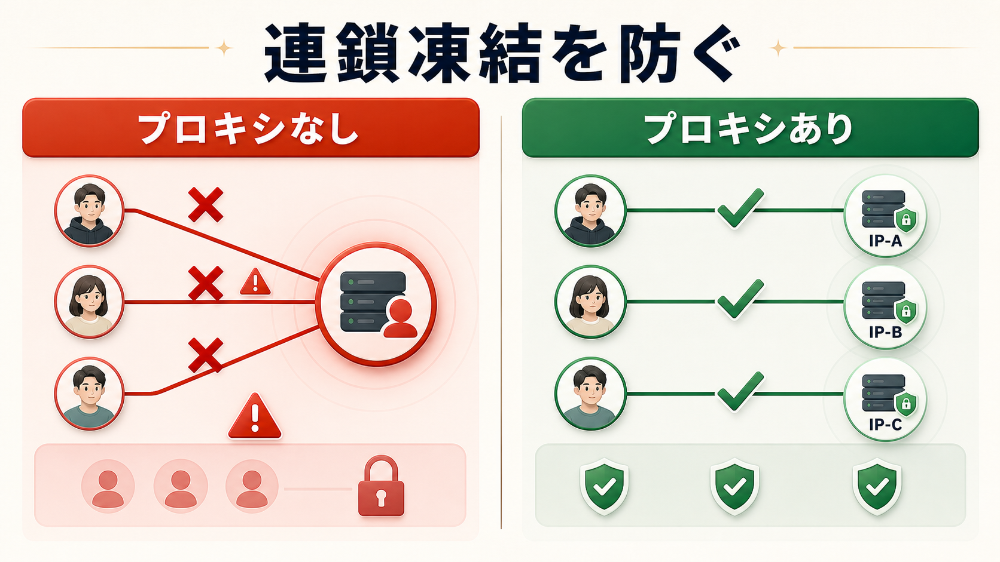
コミュニティ投稿
タイムラインを汚さず、狙ったコミュニティだけへ自然に配信できます。
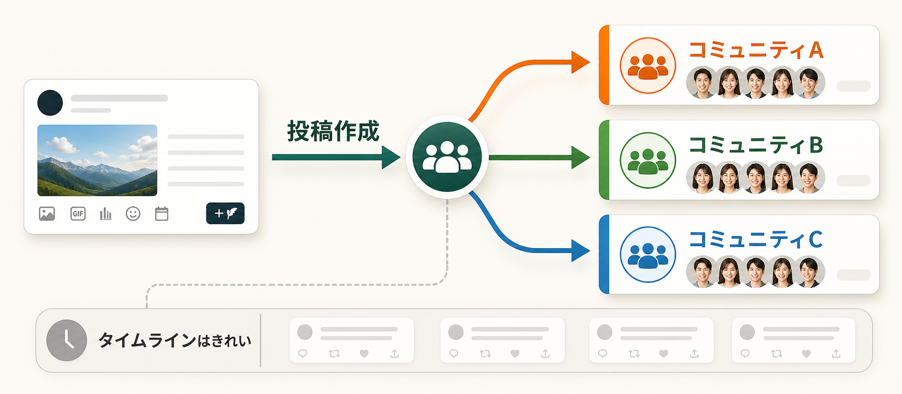
自動DM
DM受信、承認、テンプレ返信をシンプルな流れで自動化できます。

Amazon在庫復活
Keepa連携で商品を監視し、復活したタイミングを逃さず投稿できます。

Pricing
月額・サブスクは一切ありません。一度買えば、ずっと使えます。
Basic
アドオンなしでも、X自動投稿の基本運用に必要な機能は使えます。
まずは基本版で十分
基本版は「毎日投稿する」「投稿文と画像を管理する」「時刻を決めて投稿する」ための最小セットです。
XのIDとパスワードを登録し、ブラウザ操作で投稿を自動化します。
投稿文と画像をまとめて管理し、手作業の投稿準備を減らせます。
決めた時刻に投稿し、日々の投稿忘れを防ぎます。
同じ順番・同じ時間に偏らない投稿運用ができます。
Add-ons
買い切り + アドオンセットには1つ同梱。さらに追加購入もできます。5つ全部欲しい方はフル買切り（¥19,800）が¥3,200お得です。
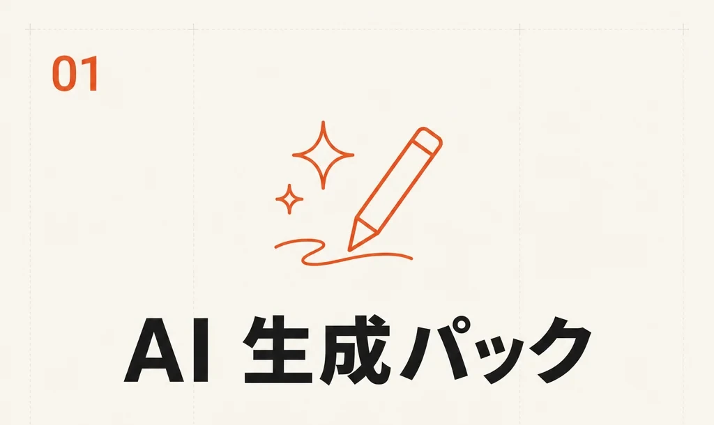
¥4,000
ランダム投稿+AI+スプシ取込
投稿ネタづくりから投稿データの取り込みまで、準備時間を短くします。
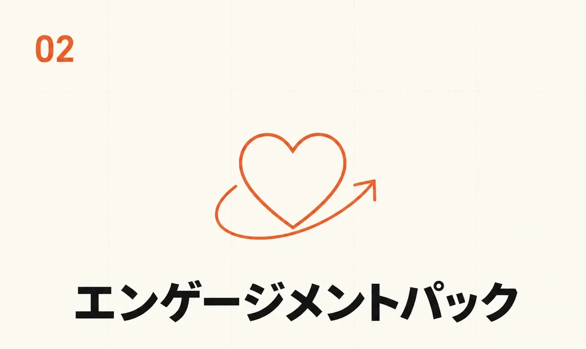
¥4,000
自動いいね+フォロー+リプライ
投稿後の反応獲得や見込みユーザーへの接触を補助します。
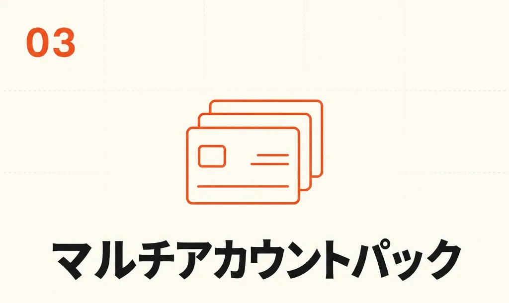
¥5,000
プロキシ+一括登録+共通設定
複数アカウント運用の登録・設定・IP分散をまとめて扱えます。
¥4,000
コミュニティ自動投稿
濃いユーザーが集まるコミュニティへ、投稿先を分けて配信できます。
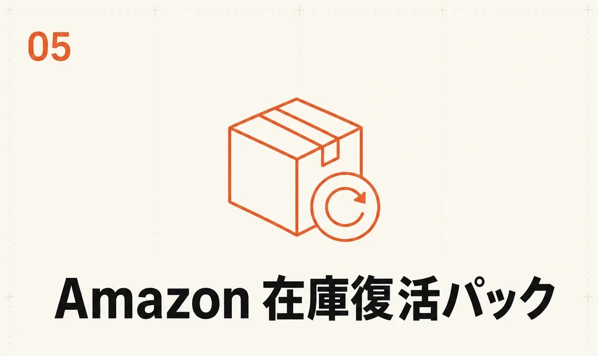
¥6,000
Keepa連携+在庫監視+自動投稿
在庫復活の検知からX投稿までをつなげ、投稿チャンスを逃しにくくします。
Compare
| 比較項目 | 無料版 | 買い切り + アドオン | フル買切り |
|---|---|---|---|
| 価格 | ¥0 | ¥2,980〜 | ¥19,800 |
| 定期投稿 | ○ | ○ | ○ |
| 予約投稿 | — | ○ | ○ |
| ランダム投稿 | — | ○ | ○ |
| 複数アカウント | 1つまで | 無制限 | 無制限 |
| AIクレジット | — | 1,000pt | 1,000pt |
| アドオン | — | 1つ同梱 + 追加可 | 全5種同梱 |
| 新機能の即時利用 | — | 基本機能のみ | ○ |
| サポート | — | ○ | ○ |
Reviews
累計100名以上が選んだ、本物の自動化。
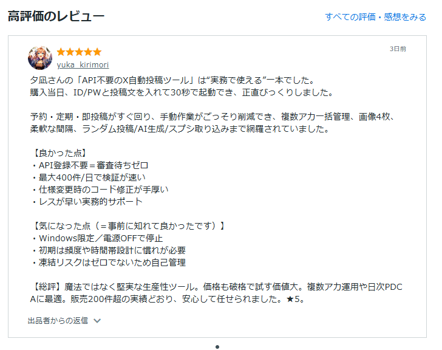
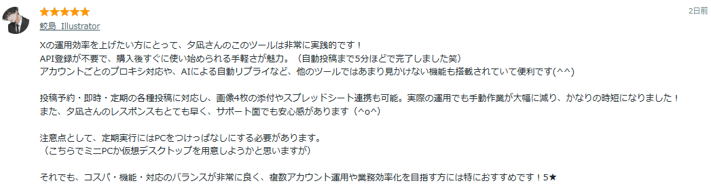
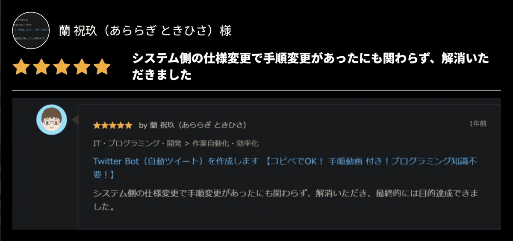
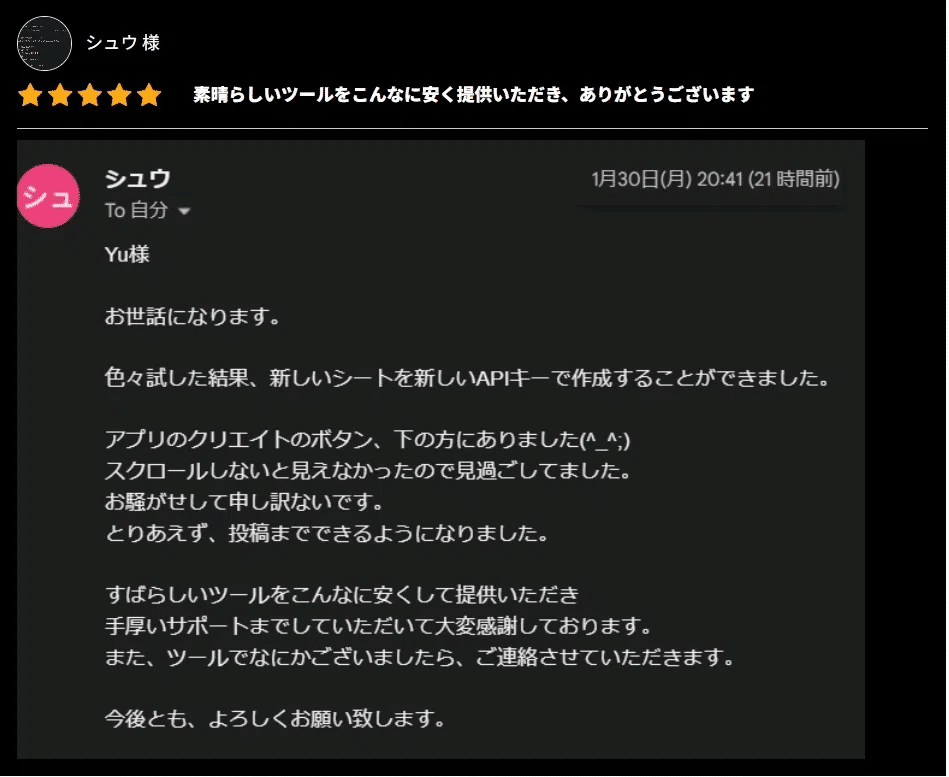
Developer
早稲田大学院を修了後、上場企業でAI推進を担当。AIサービス導入プロジェクトを成功に導き、マイナビ社のウェブサイトに成功事例として掲載されました。
そこで培った企業レベルの技術と品質管理を、個人の副業ツールに落とし込んで開発したのがXToolsシリーズです。3年の歳月をかけてXToolsPro2を育て、ユーザーの声を反映してXToolsPro3へ進化させています。
Notes
Windows専用です。Mac / Linuxには対応していません。
プロキシを使う場合、別途プロキシサービスの契約が必要です。
24時間運用したい場合は、PCを起動したままにするかVPSをご利用ください。
FAQ
不要です。XのIDとパスワードを登録して、ブラウザ操作を自動化します。
Windows専用です。Mac / Linuxには対応していません。 Windows 10以降のPCをご用意ください。
特段の制限はありません。登録自体は目安100アカウントまで可能ですが、1アカウントごとにChromeが1つ立ち上がるため、PC性能によっては処理落ちする場合があります。同時刻の投稿は10アカウント程度を目安にしてください。設定でアカウントごとの投稿時刻をずらすことも可能です。
Windows 10以降、メモリ4GB以上（推奨8GB）、空き容量1GB、インターネット接続が目安です。一般的なノートPCでも動作します。
プロキシを使う場合は、IPRoyalなどの外部サービス契約が別途必要です。目安は1アカウントあたり月額500〜800円ほどで、アカウントを守るための保険料として考えてください。
できます。無料版のデータ・設定はそのまま引き継げるため、再インストールなしで有料版へ移行できます。
追加できます。必要になったタイミングで好きなパックを足せます。最初から全部使う場合は、フル買い切り版（¥19,800）が単品合計より¥3,200お得です。
他にご質問があれば、お問い合わせフォームからご相談ください。